The roots of Indian history lie in its historic forts, the ancient temples, and the alluring Mughal architecture.
Have a Look at 11 most interesting places in india with there Interesting facts!
1.Taj Mahal, Agra
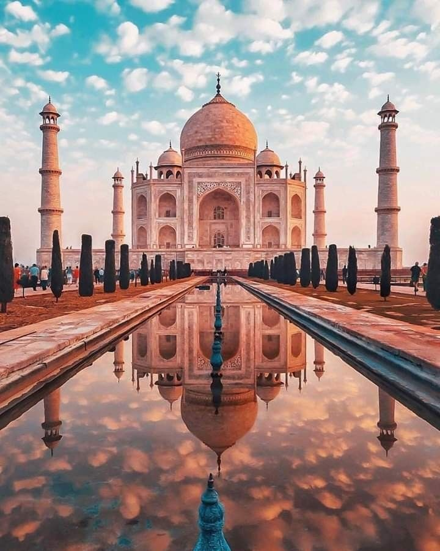
This epitome of Mughal architecture, built entirely with white marble is one of the most
well-known identifiers of India. Its grandeur and beauty will have you spellbound.
Shah Jahan built this paragon for his wife Mumtaz Mahal to enunciate his love for
her.
Situated in one of the “Golden Triangle” cities, you also get an opportunity to
explore the streets of Agra.
Interesting fact:
The Color of Taj Mahal Appears Golden at Sunrise,White in the afternoon and Quite Yellow at the
time of sunset!
Must see:
Nighttime shows of the Taj Mahal!
2.Jaipur City Palace, Rajasthan
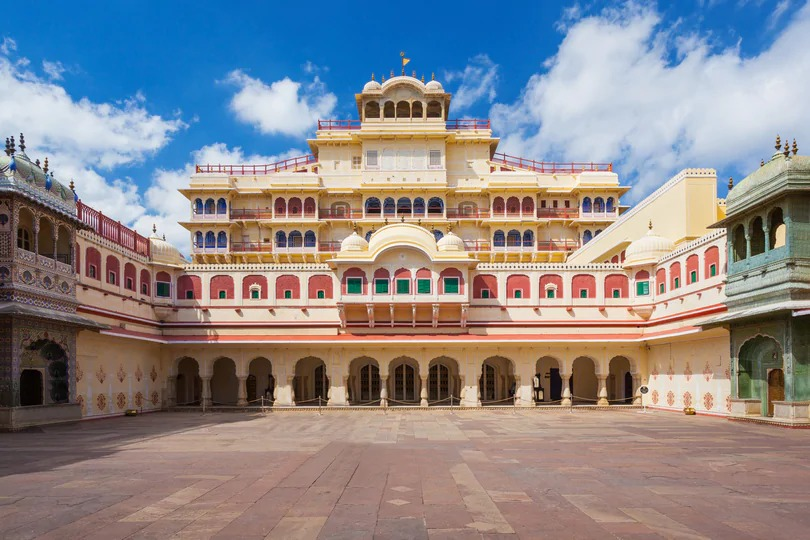
This palace was constructed by the great ruler Maharaja Sawai Jai Singh II and
reflects the perfect fusion of Mughal and Rajput architecture. The complex covers
an area almost equivalent to one-seventh of the old city of Jaipur and boasts of
several picturesque gardens, buildings, courtyards and temples that reflects its
historical importance and imparts it a magnificent royal charm.
Interesting fact:
One of the most interesting items in the City Palace is two Sterling Silver Jars which are officially
recorded in the Guinness Book of World Records and one of the largest pure silver jars in the world!
Must see:
Surely Visit pink city "Jaipur"
3.Ajanta and Ellora, Maharashtra
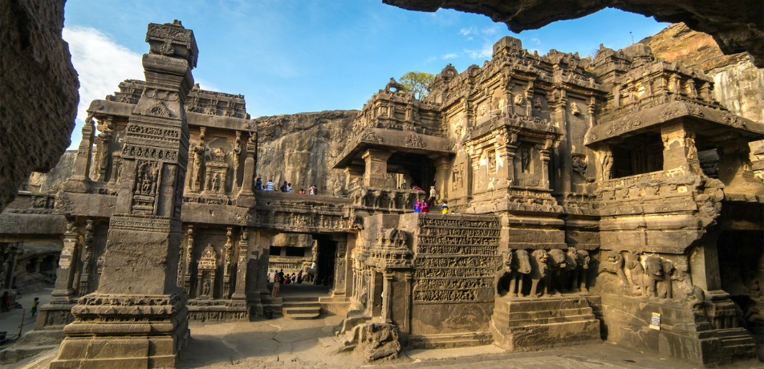
The enthralling caves of Ajanta and Ellora in Maharashtra are the epitome of
beauty. With their authentic rock-cut sculptures and ancient Indian art, the caves
have become a UNESCO World Heritage site.The artifacts in the cave portray
the past lives and rebirths of Buddha in spellbinding sculptures and murals. Discovered
in 1819, the caves are a popular tourist hot spots and a must visit.
Interesting fact:
Ajanta caves are 2000 years old and the Buddha’s effigy is about 600 years old!
In Ellora caves influence of Triveni Sangam of the faith shown towards Hinduism, Jainism, and
Buddhism is found, in three religions!
Must see:
Ajanta: Cave 26 which is an elaborately decorated Chaitya hall with a stupa.
Ellora: The ‘Cavern of the Ten Avatars’ built under the reign of Krishna I.
4.Kutub Minar, Delhi
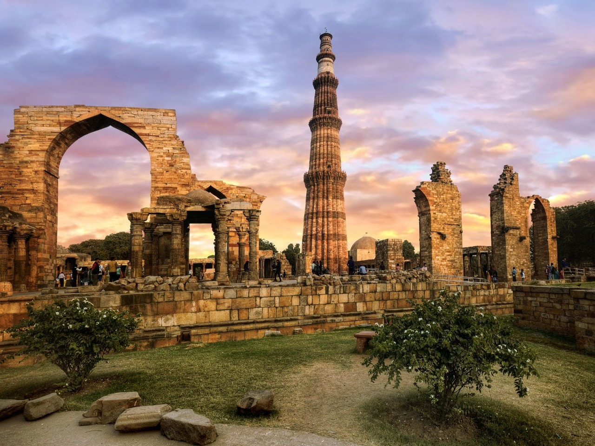
One of the tallest creations in the Indian history is the Qutub Minar. With its red
sandstone and aesthetic Iranian architecture, the minaret is the most famous tourist
attraction in India.Built by Qutub Ud-Din-Aibak in the nineteenth century this
tower is a must visit place in Delhi.
Interesting fact:
There is a 2,000 years old iron pillar in the complex that hasn’t rusted in over two centuries!
Must see:
The Decorative Light Show held every evening from 6:30 to 8 pm and the Qutub Minar Festival that is held in October/November.
5.Hawa Mahal, Jaipur
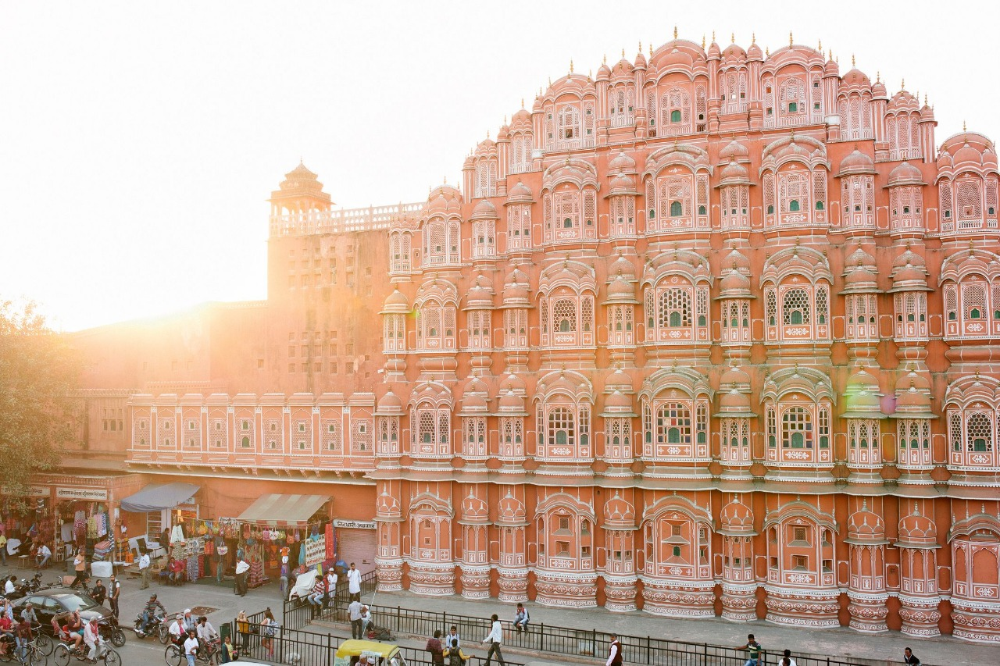
Designed by Lal Chand Ustad, Hawa Mahal is built in red and pink sandstone.
Interestingly, Hawa Mahal is more of a gallery and was created so that the royal
ladies could look outside as they were constantly under ‘purdah’.Located in the
heart of Jaipur.
Interesting fact:
Hawa Mahal also known as "Palace of Winds" as it has 953 windows which keeps mahal cool!
Must see:
The intricate lattice work on the tiny windows.
6.Mysore palace, Mysore
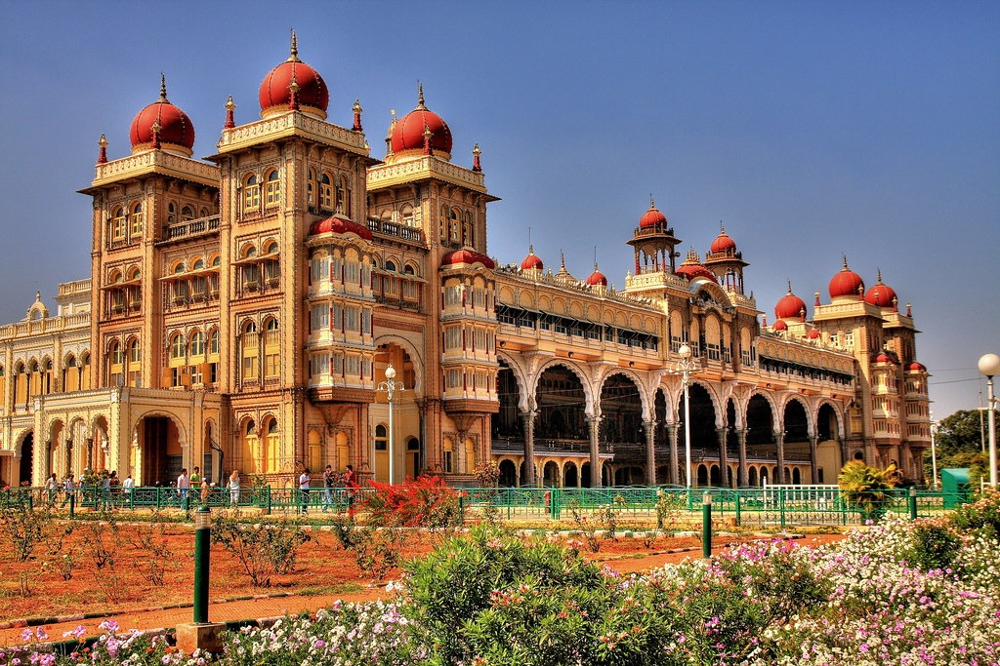
Built by British architect Lord Henry Irwin in 1912, Mysore Palace is located in the
heart of the city. An architectural wonder built in Indo Saracenic style, this palace
features intricate interiors. Interestingly, Golden palanquin was used by
the Maharaja which was then carried by elephants during the annual Dasara festivities.
Goddess Durga’s idol is now placed inside the palanquin.
Interesting fact:
Mysore Palace was turned into a museum. Museum holds the artefacts, pictures, royal clothing,
etc. of the Wodeyars.There are 14 temples inside the Mysore Palace!
Must see:
The way the palace is lighted up during the Dussehra festival with over 10,000 lights.
7.Victoria Memorial, Kolkata
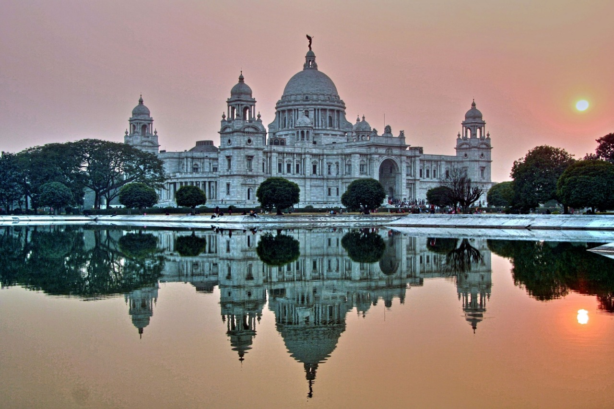
Located right in the heart of Kolkata, this memorial has been named after Queen
Victoria. The elegant white marble structure is girdled by lush green gardens which
together cover 64 acres of land. Small sculptures and statues, which are spread
throughout the gardens, add further charm to the memorial premises.
Interesting fact:
The figure of 'Angel of Victory' is erected on the central dome of Victoria Memorial. Mounted on
large ball bearings, the figure rotates with the wind!
Must see:
The black bronze statue “Angel of Victory” that lies on the apex of the memorial’s dome. In favorable weather, it also acts as a weathercock.
8.Konark Temple, Odisha
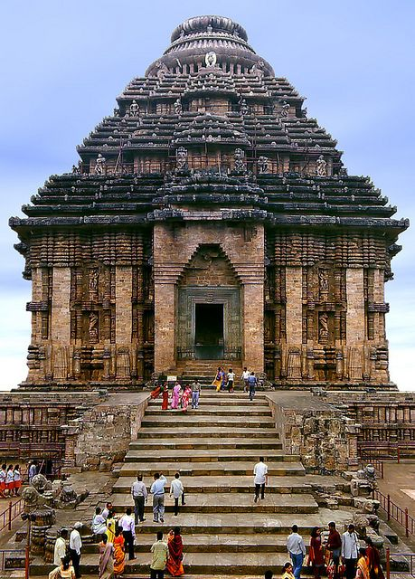
Devoted to the Sun God ‘Surya’, the prepossessing Konark Temple is the most
spellbinding historic site in Odisha. The Kalinga architecture reflecting in its
gigantic chariot, pillars and walls give the temple an Odiya touch.
Also classified as
‘Black Pagoda’ by some European sailors, this UNESCO World Heritage site has
also featured in the list of 7 Wonders of India.
Interesting fact:
The wheel of chariot of Konark Sun Temple was made and established in such a way
that it can tell you the time!
Must see:
The three statues of the sun gods where the sun’s rays fall at dawn, noon and sunset.
9.Mahabalipuram, Tamilnadu
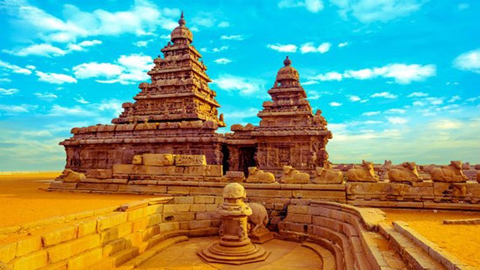
The antique carved rocks blended with the chariots and cave sanctuaries make
Mahabalipuram, one of the key historic sites of Tamil Nadu.
Built in the 7th century
by the dynasty of Pallavas, the Shore Temple is one of the most popular monuments
of Mahabalipuram. Dedicated to Lord Shiva, the temple exhibits a strong Dravidian
influence in its architecture infused with some Buddhist elements.
Interesting fact:
Most of these monuments are monolithic ie, carved from a single rock!
Must see:
Dance festivals are major tourist attractions of these Mahabalipuram temples. There is a Mamallapuram Dance Festival every year celebrated in the month of December or January.
10.Sanchi Stupa, MadhyaPradesh
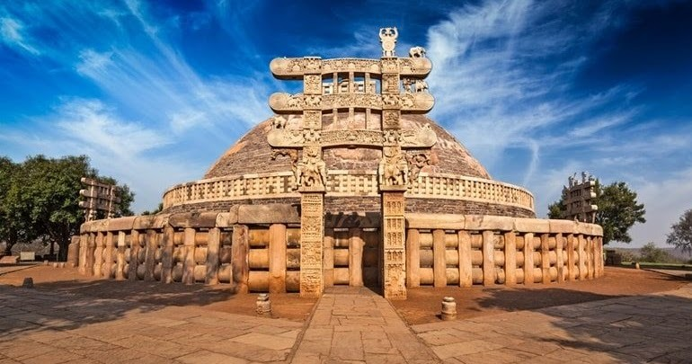
The Sanchi stupa stands as an unparalleled example of the majestic aura that is
encompassed within the Buddhist style of architecture. Ancient relics of Lord
Buddha are rooted within the dome- shaped structure of the stupa, which was how
the structure looked until the dawn of the 1st century.Marked as a UNESCO world
heritage site the stupa is visited regularly by uncountable visitors. So what are you waiting for!
Interesting facts:
Stupa is brick structure and is surrounded by wooden railing!
The dome symbolized the wheel of Dharma.
Must see:
The Ashoka pillar has four lions and is designed in a Greco-Buddhist style. It is also the national emblem of India.
11.India Gate, Delhi
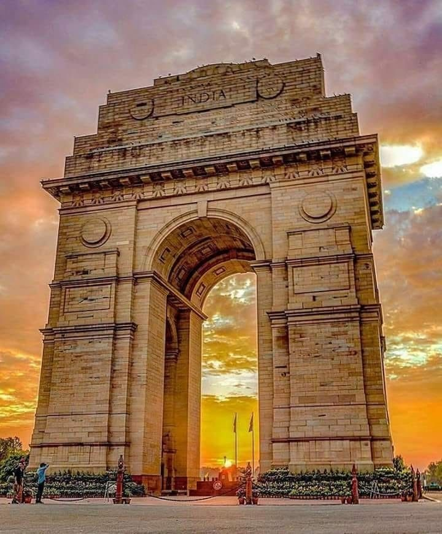
This 42-metre tall war memorial is dedicated to pay tribute to the soldiers of the
British Indian Army who died during World War I between 1914 and 1921.
Located in the heart of Delhi, the beautiful lawns surrounding the monument are
perfect for a leisurely evening picnic, Designed by Edwin Lutyens,
the cornices of the structure are adorned with the inscription of sun, which
symbolized the British Imperial Colony, and the word INDIA is inscribed at the top
of the arches on both sides.
Interesting fact:
It is the venue for hoisting the Indian Flag on
Republic Day parade which was previously hoisted at Rashtrapati Bhawan!
Must see:
Amar Jawan Jyoti, Children’s Park